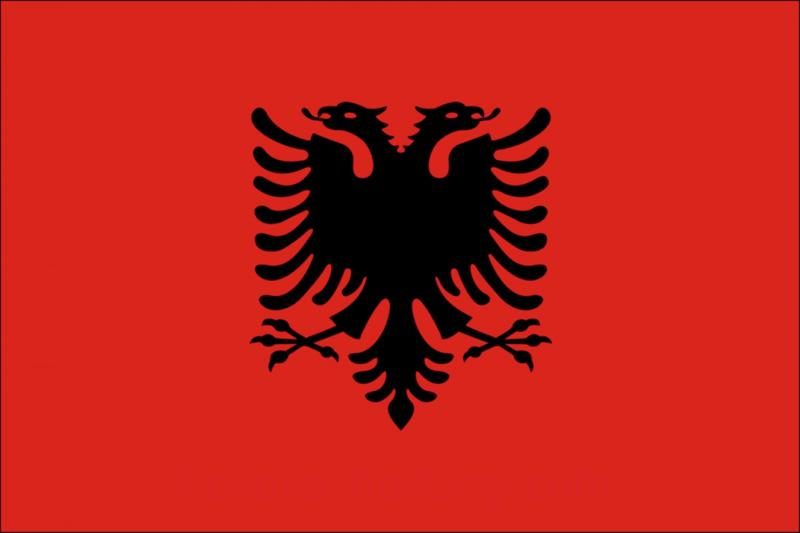

Festa e 28 Nëntorit

28 Nëntori është një nga datat më të rëndësishme në historinë e kombit shqiptar.
Në këtë ditë të vitit 1912, Shqipëria shpalli Pavarësinë në Vlorë nën udhëheqjen e Ismail Qemalit,
dhe flamuri kuqezi u ngrit si simbol i lirisë dhe identitetit tonë kombëtar.
Kjo ditë përkujton gjithashtu ngritjen e flamurit të Skënderbeut në Krujë në vitin 1443.
Është dita e krenarisë, unitetit dhe shpirtit shqiptar.
Vazhdo te Kuizi